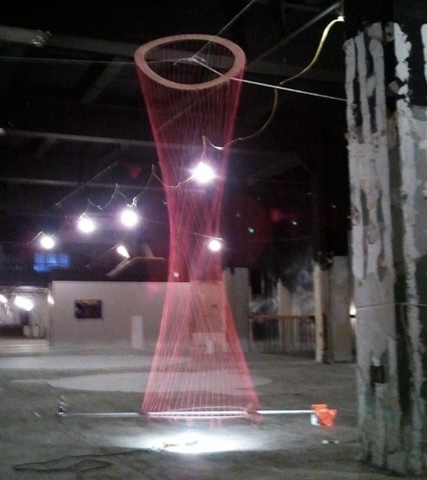
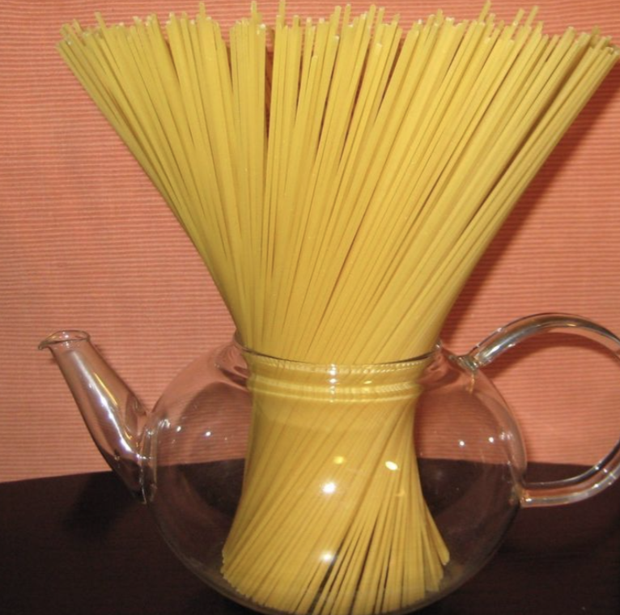
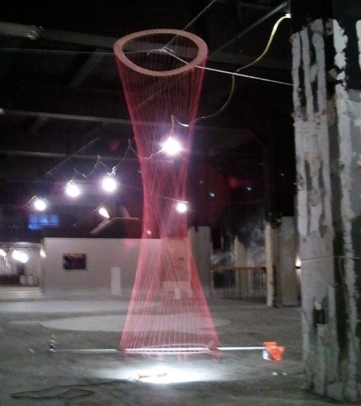
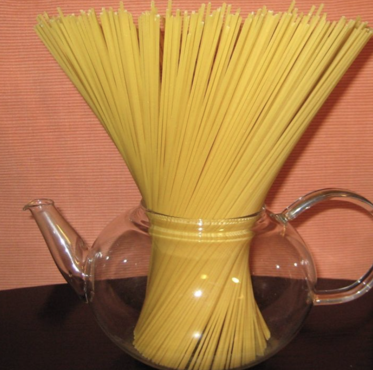
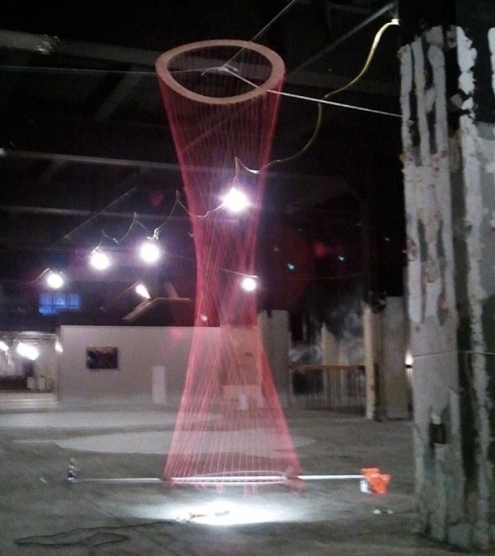
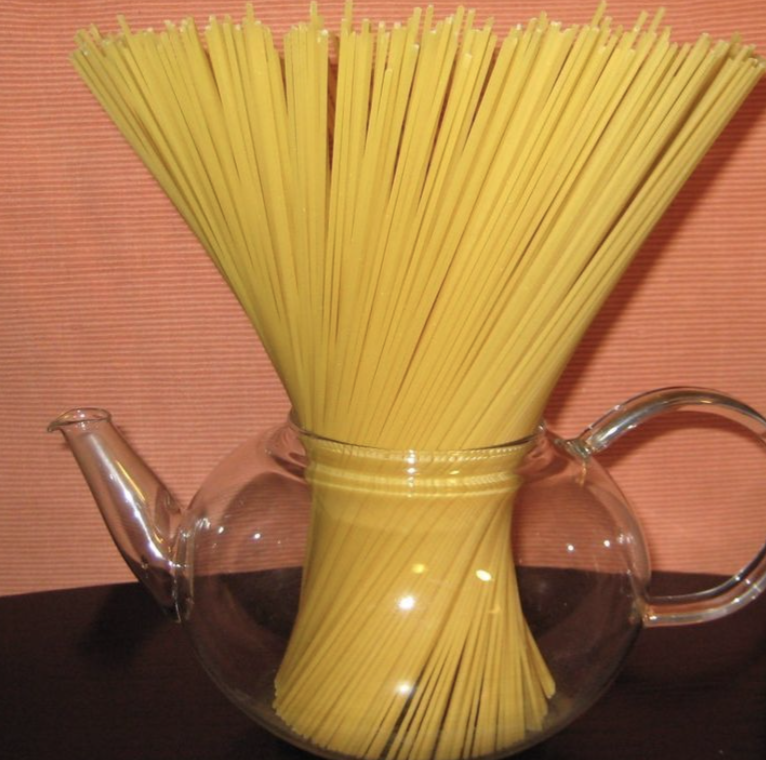

Learning Hyperboloids
In geometry, a hyperboloid of revolution, sometimes called circular hyperboloid, is a surface that may be generated by rotating a hyperbola around one of its principal axes.
 
 


